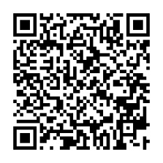

Memahami konsep struktur data dan algoritma standar.
BAB II • INFORMATIKA
Algoritma dan
Struktur Data
Bagaimana urutan data menentukan cara penyimpanannya?
Informatika Fase E • Kelas XMicroteaching 15 Menit
Muhamad Khoirul Ramadhan • 2413025012

SLIDE 02 • TUJUAN & ALUR
Tujuan pembelajaran
Murid menjelaskan LIFO dan FIFO, memilih stack atau queue pada 3 dari 4 kasus, lalu menelusuri operasi dasarnya.
Urutan data masuk menentukan data yang diproses atau dikeluarkan lebih dahulu.
Agenda 15 menit
2 menitPemantik
3 menitStack & Queue
5 menitLKPD berpasangan
2 menitBerbagi temuan
2 menitKuis cepat
1 menitSimpulan

SLIDE 03 • PEMANTIK
Tumpukan buku dan antrean kantin: apa bedanya?
Amati urutan saat barang ditambahkan dan saat diambil atau dilayani.
1
Tumpukan buku
Buku paling atas biasanya diambil lebih dahulu.
2
Antrean kantin
Orang yang datang lebih dahulu dilayani lebih dahulu.
?
Pertanyaan
Bagaimana urutan ini diterapkan saat menyimpan data?
SLIDE 04 • STACK / TUMPUKAN
Stack: Last In, First Out
LIFO berarti data yang terakhir dimasukkan menjadi data pertama yang dikeluarkan.
Operasi dasar
PUSH menambahkan data di bagian atas stack.
POP mengambil data yang berada paling atas.
C terakhir masuk • keluar pertama
B
A pertama masuk • keluar terakhir
Contoh: tumpukan piring, riwayat Back pada browser, dan langkah Undo.
SLIDE 05 • QUEUE / ANTREAN
Queue: First In, First Out
FIFO berarti data yang pertama masuk menjadi data pertama yang dikeluarkan.
KELUAR
DEQUEUE
DEQUEUE
Apertama masuk
B
Cterakhir masuk
MASUK
ENQUEUE
ENQUEUE
DATA MASUK DARI BELAKANG • KELUAR DARI DEPAN
Contoh: antrean layanan dan dokumen yang menunggu giliran cetak.
SLIDE 06 • SIMULASI OPERASI
Amati data yang keluar
Jalankan contoh stack dan queue. Perhatikan bahwa susunan perintahnya sama, tetapi urutan keluar berbeda.
Stack
Urutan: PUSH 4, PUSH 7, POP
Isi stack: kosong
Nilai keluar: —
Queue
Urutan: ENQUEUE 4, ENQUEUE 7, DEQUEUE
Isi queue: kosong
Nilai keluar: —
SLIDE 07 • KERJA BERPASANGAN / LKPD
Analisis kasus dan telusuri operasi
Pindai QR LKPD Bab II untuk membuka lembar kerja. Diskusikan pilihan struktur dan alasan bersama pasangan.
Riwayat browser, antrean cetak, tumpukan buku, dan antrean layanan.
Telusuri PUSH/POP dan ENQUEUE/DEQUEUE berdasarkan isi awal.
Jelaskan urutan data masuk dan data keluar.
Pindai untuk membuka LKPD
Arahkan kamera ponsel ke kode QR untuk membuka lembar kerja.
SLIDE 08 • PILIH STACK ATAU QUEUE
Struktur mana yang sesuai?
Klik jawaban untuk setiap kasus.
Riwayat browser saat menekan Back
Dokumen menunggu giliran cetak
Undo membatalkan langkah terakhir
Orang menunggu layanan menurut waktu datang
SLIDE 09 • KUIS INTERAKTIF
Cek pemahaman akhir
Soal 1
Data pertama masuk akan keluar lebih dahulu. Prinsip ini disebut …
Soal 2
Stack menerima PUSH 3, kemudian PUSH 8. Nilai yang keluar saat POP adalah …
Soal 3
Struktur yang sesuai untuk dokumen yang menunggu giliran dicetak adalah …
SLIDE 10 • SIMPULAN & REFLEKSI
Mari simpulkan
Data terakhir masuk keluar lebih dahulu. Operasi: PUSH dan POP.
Data pertama masuk keluar lebih dahulu. Operasi: ENQUEUE dan DEQUEUE.
Periksa cara data masuk, disimpan, dan dikeluarkan.
Alokasi pembelajaran: 15 menit